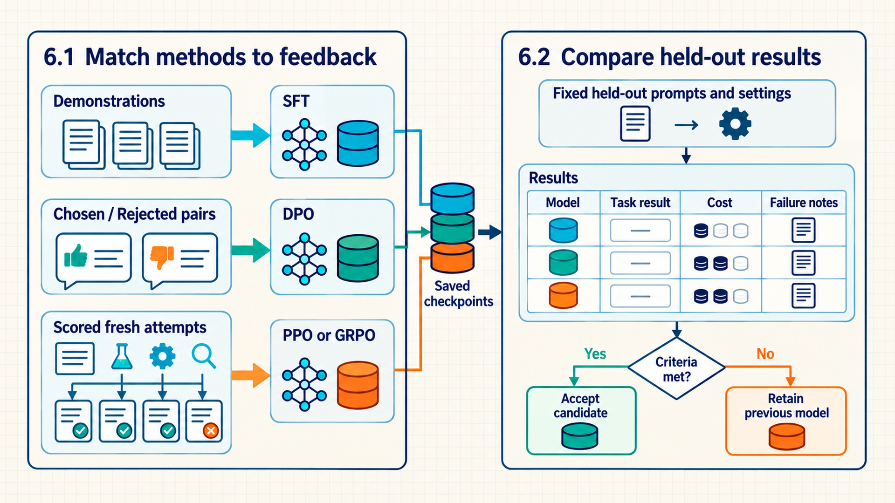

6 Choosing and evaluating training methods
The earlier chapters connected each training method to the feedback it can use: demonstrated answers, preference pairs, scores for fresh attempts, and checks on results or tool actions. A project may have only some of that feedback. The training method must fit both the available data and the behavior the model needs to improve. The final choice is tested by comparing saved models under the same evaluation procedure.
Begin with the least complex training loop that can use the evidence already available. Add online generation only when new model behavior must be explored and can be scored reliably.
Choosing a training method and accepting a trained model are separate decisions. The first uses the feedback a project can collect. The second uses results from a fixed, independent evaluation. Tülu 3 is one concrete example of keeping development evaluations separate from an unseen suite, and it also reports cases where development choices overfit selected evaluation tasks.1

The three branches in Section 6.1 are alternatives, not required stages. Section 6.2 records task results, cost, and failure details under the same evaluation procedure. Its symbols illustrate the records to collect, not measured performance rankings. A candidate replaces the previous model only when the acceptance criteria are met.
6.1 Matching the method to the feedback
The methods differ first by the feedback available for training. A set of demonstrated answers can support SFT, as in the demonstration stage of InstructGPT.2 Saved chosen-versus-rejected pairs can support DPO without sampling fresh answers during that fine-tuning stage.3 A reliable way to score newly generated answers can support online reinforcement learning. DeepSeekMath’s GRPO setup, for example, samples groups of fresh outputs and scores them before the update.4 A project does not have to pass through every method. The question is which training loop can use its feedback and improve the target behavior at an acceptable cost.
- Training feedback: The information used to judge an update: a demonstrated answer, a relative ranking, a score for a fresh attempt, or checks on an interaction. These are different kinds of evidence, not mandatory steps in a single training pipeline.
The decision table separates the available evidence, the training setup that can use it, and the method for calculating an update. SFT, DPO, PPO, and GRPO define different training calculations. An optimizer, such as AdamW, applies the resulting parameter changes. A verifier supplies feedback to one of those calculations.
| Available evidence | Training setup | Initial update method | Reason |
|---|---|---|---|
| One trusted answer per prompt | Supervised training | SFT | Increase the likelihood of demonstrated behavior. |
| Chosen/rejected answer pairs | Offline preference training | DPO | Use recorded rankings without fresh rollouts. |
| A trusted scorer for fresh outputs | Online RL; RLHF when the reward reflects human feedback | PPO or GRPO | Explore new behavior using a reliable reward for each attempt. |
| Reliable tests or exact outcomes | RLVR | GRPO or PPO | Score fresh attempts with executable checks. |
| A stateful tool environment | Agentic RL | PPO, GRPO, or a custom update | Learn across actions and returned observations. |
For example, demonstrations alone do not supply PPO with a reward for an arbitrary new answer. An additional scorer or rule would be needed. A reliable test suite can supply that reward directly, without first training a preference model. The table therefore separates the feedback source, such as a verifier, from the update rule, such as PPO or GRPO.
The method may change as the feedback changes. A project can start with SFT to establish the task format, add DPO when it collects reliable chosen/rejected comparisons, and move to PPO or GRPO only when it can score fresh generated behavior. For a testable coding or math task, an RLVR verifier can replace subjective scoring for the outcome it checks when that check reliably represents the task requirement. For tool use, the environment must also provide the next observation and enforce action limits.
6.2 Comparing models on held-out tasks
A suitable training method can still produce an unsuitable saved model. It may improve the training reward while losing another skill, increasing response cost, or failing on prompts outside the training set. Comparing checkpoints requires held-out tasks and the same evaluation procedure, with both average results and specific failure categories retained. This is an engineering evaluation rule in this guide. Tülu 3’s development-versus-unseen comparisons illustrate why the split matters, but one report cannot establish a universally sufficient evaluation suite.5
Evaluation must match the target behavior: Training curves alone are not evidence of improvement. The checks that follow are this guide’s engineering recommendations, not a claim that one metric set is sufficient for every application. For SFT, inspect held-out likelihood and task generations. For DPO, monitor preference accuracy and reward margin on held-out pairs. For PPO and GRPO, report reward, KL or clipping diagnostics where applicable, and performance on independent evaluators. For RLVR and agents, use held-out tests, adversarial cases, tool-cost measures, and failure-recovery evaluation.
Evaluation procedure: The fixed prompt split, generation settings, evaluator, cost measurements, and acceptance rules used to compare checkpoints. It remains separate from the training reward so the method cannot define its own success test.
Keep evaluation prompts disjoint from fine-tuning data, including related answers, preference pairs, and near-duplicate tasks, and report both average performance and failure categories. Otherwise a higher reward can hide regressions in safety, latency, cost, or capability retention. Compare the same base, SFT, DPO, and online-RL checkpoints under the same generation budget so the method, rather than a changed sampler, receives credit.
That split does not establish whether the base model saw benchmark questions during pretraining. Benchmark contamination occurs when test material, or a close version of it, appears in training data, so a high score may reflect prior exposure. If the pretraining corpus is unavailable, that exposure is unknown. Report the fine-tuning split and duplicate-removal rules, which training data could be inspected, and what overlap checks found. A clean fine-tuning split does not establish a clean pretraining history. Yang and colleagues showed that paraphrasing and translation could bypass n-gram decontamination in their tested benchmarks and training sets. This establishes a failure mode for simple matching, not the completeness of their proposed detector.6
Compare methods and checkpoints with five practical questions.
Feedback: Is the training signal trustworthy for the target behavior?
Cost: How much time and computation do fresh rollouts require?
Coverage: Does evaluation include the prompts and answers expected in use?
Recovery: Can the update be rolled back if behavior regresses?
Exploitation: Can the model exploit the scorer, verifier, or tools?
The saved-data SFT and DPO workflows are relatively easy to repeat. Online DPO, PPO, and GRPO add exploration but require generation and scoring systems. RLVR and agentic RL reduce subjective scoring only when their verifiers and environments are carefully maintained.
This is evaluation pseudocode. It assumes implementations of task loading, generation, scoring, failure classification, and reporting, plus already loaded models. generate returns both text outputs and measured run statistics. The evaluator receives the tasks as well as the outputs so it can compare each answer with the correct requirement. Expected output is one report per checkpoint with per-task results, measured cost, and grouped failures. The example does not claim that any checkpoint improved.
The loop scores fixed checkpoints and does not update their parameters.
Code example 6.1: One held-out loop compares checkpoints under fixed settings.
evaluation_items = load_held_out_tasks(split="evaluation")
checkpoints = {"base": base_model, "sft": sft_model, "dpo": dpo_model}
generation_cfg = GenerationConfig(max_new_tokens=256, do_sample=False)
for name, model in checkpoints.items():
outputs, run_stats = generate(model, evaluation_items, generation_cfg)
results = task_evaluator.score(evaluation_items, outputs)
report(
name = name,
results = results,
cost = run_stats,
failures = classify_failures(outputs, results),
)The dictionary contains base, SFT, and DPO checkpoints as an example. A PPO- or GRPO-trained text checkpoint can be added to the same comparison if it uses the same task interface. Evaluating an agent requires an episode runner that executes tool interactions. Replacing it with a single text-generation call would miss the behavior being tested.
This held-out loop separates five evaluation jobs from trainer metrics.
evaluation_items: Provide prompts excluded from training.GenerationConfig: Fix decoding so checkpoint comparisons use the same generation settings.task_evaluator: Compare outputs with their corresponding task requirements and apply correctness, safety, and format checks.run_stats: Retain measurements taken during generation, such as token counts, elapsed time, and peak memory. These cannot all be recovered from the answer strings afterward.report: Record mean results, cost, and failure categories for each checkpoint.
For open-ended answers without a checkable result, an LLM can act as a judge only under controlled conditions. Fix the judge model revision, prompt, rubric, and decision rule. Randomize answer labels and score each pair with the answer positions swapped, then record any disagreement. A judge can favor the first position, more verbose answers, or answers from its own model family. Validate the judging procedure against blinded human ratings or a checkable subset before using it for an acceptance decision. Zheng and colleagues documented position, verbosity, and self-enhancement biases and compared selected judge decisions with human preferences in MT-Bench and Chatbot Arena.7
Length can bias a judge comparison: a judge may prefer a longer answer because it contains more useful detail, because it appears to cover more of the request, or both. Report answer length beside the raw judge win rate. Length-Controlled AlpacaEval fits a generalized linear model of automatic preferences using length difference and other features, then estimates preferences with the length difference set to zero.8 This asks how the comparison might look at equal length under the fitted model. Report the adjusted and unadjusted results together. The adjustment depends on that model and cannot turn an incorrect answer into a correct one or replace task-specific checks.
For a task with an executable or otherwise reliable check, HumanEval illustrates a different question: how often can sampling find a correct answer? For one task, pass@k is the probability that at least one of \(k\) sampled answers passes. A benchmark reports an estimate averaged across its tasks. pass@1 uses one answer per attempt. Fix decoding settings, \(k\), and the total generation budget before comparing checkpoints. These metrics measure success within a sampling budget, not whether the model’s confidence matches its accuracy. Evaluation sample count \(k\) and GRPO training group size \(G\) are separate choices, even when their numerical values happen to match.9
Example: reading pass@1 and pass@3
A coding task has a reliable test suite. Under one fixed prompt and sampling setup, suppose each independent answer has a 20% chance of passing. With one answer, pass@1 is 20%. With three answers, the chance that none passes is \((1 - 0.20)^3 = 51.2\%\), so the chance that at least one passes is \(1 - 51.2\% = 48.8\%\).
The evaluator records the three samples, the same decoding settings, and the total token and computation budget for all three. A deployed system that returns one untested answer cannot use this result to know that its chosen answer is correct. It needs the test suite or another reliable selector.
Conclusion: pass@3 describes an opportunity to find a correct answer within a stated sampling budget. It is not evidence that a three-sample deployment will select the correct answer without a selector.
The preceding example assumed a known success probability. An evaluator usually has a finite sample instead. If it generates \(n\) answers and \(c\) pass, the standard multiple-sample estimate uses the fraction of size-\(k\) subsets containing at least one success:
\[\widehat{\mathrm{pass@}k}=1-\frac{\binom{n-c}{k}}{\binom{n}{k}},\qquad n\geq k.\]
Here \(\binom{n}{k}\) counts all size-\(k\) subsets of the \(n\) sampled answers. The numerator counts subsets consisting only of the \(n-c\) failures, so subtracting their fraction from one counts subsets with a success. The numerator is zero when fewer than \(k\) failures exist. With two successes among ten samples and \(k=3\), the estimate is \(1-\binom{8}{3}/\binom{10}{3}=1-56/120\approx0.533\). This is not the same calculation as assuming the true success probability is exactly 0.2. Chen and colleagues develop this estimator and explain that the plug-in expression \(1-(1-\hat p)^k\) is biased; interpretation still depends on the sampling procedure and correctness check.10
A change in pass@1 and a change in large-budget pass@k answer different deployment questions. A model that makes one familiar correct route much more likely can help a one-answer application while offering less variety to a many-answer search. Compare both under matched prompts and decoding, and record total generated tokens rather than treating the same number of attempts as equal cost when answers have different lengths.
Trainer metrics support diagnosis. Acceptance depends on independent evaluation and regression checks for the intended use.
Example: choosing a coding checkpoint
An application currently uses an SFT checkpoint and is considering a DPO candidate. This is evaluation: both saved models stay fixed. Each answers the same 100 held-out coding tasks using greedy decoding and a limit of 256 new tokens. Separate tests determine whether each answer solves its task. The acceptance rule requires improved correctness, no failed safety check, and a median answer length of at most 140 tokens to keep response cost within the chosen budget.
- The current SFT checkpoint passes 78 tasks, fails no safety checks, and uses a median of 110 tokens per answer.
- The DPO candidate passes 82 tasks and fails no safety checks, but its median answer length is 150 tokens.
- The candidate passes four more tasks in aggregate, yet exceeds the length limit by ten tokens. The evaluator records both results and retains the current SFT checkpoint. The totals do not show which individual tasks were gained or lost.
Conclusion: Better correctness alone does not satisfy the stated acceptance rule. The next experiment should investigate the longer answers and repeat the comparison with the same reserved evaluation procedure. These numbers illustrate the decision process. They are not measured course results. In a real comparison, paired per-task results, uncertainty, and repeated-run variation are needed before attributing a small difference to training.
A single result also mixes several sources of variation. A training seed controls random choices such as data order and rollout sampling during one training run. An evaluation sampling seed controls sampled answers from an already saved model. Repeating evaluation from one checkpoint tests generation variability, not whether repeating training would produce a similar checkpoint. The held-out task sample adds another source of uncertainty.
Example: a small average gain across training runs
Suppose three independently trained SFT models pass 78%, 80%, and 82% of the same held-out tasks. Three DPO runs pass 80%, 82%, and 84%. These illustrative percentages use the same evaluator and generation settings. Each method has a mean of 80% or 82%, respectively, and a sample standard deviation of 2 percentage points.
The two-point average gain is therefore not the whole result: training outcomes varied by a similar amount within each method. These six percentages do not show which individual tasks changed, and three runs do not establish a reliable general ranking. Save the per-task outcomes and the relationship between starting checkpoints and later runs before choosing an uncertainty analysis.
Conclusion: Report the mean, the spread across training runs, the number of runs, and the task count. A task-level interval alone does not include training variability. Repeated-run spread alone does not describe uncertainty from the task sample. A limited budget is a reason to state what was measured and what remains uncertain, not to present one run as a stable gain.
Henderson and colleagues document sensitivity to random seeds, environment details, codebases, and reporting choices in deep-RL comparisons.11 Their study does not prescribe one seed count for every LLM experiment. Choose repetition and task coverage according to the size of improvement that would change the deployment decision.
The four acceptance definitions below are engineering criteria proposed by this guide. They separate the training method from the evidence needed to replace a saved model; they are not standard names established by one paper.
SFT acceptance: Held-out likelihood and task generations improve without copying the prompt or losing the required format.
DPO acceptance: Implicit chosen-versus-rejected reward accuracy and target behavior improve on held-out prompts without unacceptable capability or safety regression.
PPO/GRPO acceptance: Reward rises with controlled KL or clipping diagnostics and independent task performance. Rollout cost and variance remain within the budget.
RLVR/agent acceptance: Held-out tests never used for reward, adversarial cases, action safety, recovery, latency, and tool cost satisfy the written requirements rather than only the training-verifier reward.
Five records make the comparison reproducible and allow its conclusions to be checked. Henderson and colleagues’ analysis motivates recording seeds, software, hardware, and evaluation details, while the exact five-record structure is this guide’s recommendation.12
Data record: Version the training, validation, and held-out prompt identifiers together with filtering rules.
Training record: Save the method configuration, random seeds, software versions, hardware placement, and checkpoint lineage.
Evaluation record: Store evaluator versions, decoding settings, raw per-item results, and failure categories.
Cost record: Report generated tokens, elapsed time, peak memory, device count, and any external-tool or service cost.
Decision record: State the acceptance thresholds, observed regressions, selected checkpoint, and rollback checkpoint.
If a candidate misses a required acceptance threshold, retain the previously accepted checkpoint and use the recorded failures to choose the next change. A higher training score does not override a failed correctness, safety, or cost requirement.
Lambert, N., Morrison, J., Pyatkin, V., et al. (2024). Tülu 3: Pushing Frontiers in Open Language Model Post-Training (arXiv:2411.15124, v5). Source. Link checked 2026-09-16. Sections 7.2-7.4 compare development and unseen suites and report both generalization and specific overfitting. Material limit: one post-training recipe and its selected task suites, not a universal evaluation design.↩︎
Ouyang, L., et al. (2022). Training language models to follow instructions with human feedback. Advances in Neural Information Processing Systems, 35, 27730–27744. DOI: 10.52202/068431-2011. Official proceedings. Link checked 2026-09-16. Sections 3.2-3.5 describe demonstration-based SFT, preference comparisons, reward-model training, and PPO. Material limit: InstructGPT’s data, labelers, models, and evaluation distribution.↩︎
Rafailov, R., Sharma, A., Mitchell, E., Manning, C. D., Ermon, S., & Finn, C. (2023). Direct Preference Optimization: Your language model is secretly a reward model. Advances in Neural Information Processing Systems, 36. Source. Link checked 2026-09-16. Sections 3-5 derive DPO and evaluate it using static preference datasets without online sampling during fine-tuning. Material limit: the paper’s preference model assumptions and tested summarization, dialogue, and sentiment tasks.↩︎
Shao, Z., et al. (2024). DeepSeekMath: Pushing the Limits of Mathematical Reasoning in Open Language Models (arXiv:2402.03300). Source. Link checked 2026-09-16. Section 4.1 defines GRPO using groups of outputs sampled from the old policy and scored before an update. Material limit: mathematical reasoning with the paper’s models and reward setups.↩︎
Lambert, N., Morrison, J., Pyatkin, V., et al. (2024). Tülu 3: Pushing Frontiers in Open Language Model Post-Training (arXiv:2411.15124, v5). Source. Link checked 2026-09-16. Sections 7.2-7.4 compare development and unseen suites and report both generalization and specific overfitting. Material limit: one post-training recipe and its selected task suites, not a universal evaluation design.↩︎
Yang, S., Chiang, W.-L., Zheng, L., Gonzalez, J. E., & Stoica, I. (2023). Rethinking Benchmark and Contamination for Language Models with Rephrased Samples (arXiv:2311.04850). Source. Link checked 2026-09-16. Abstract and Sections 2-4 test paraphrased and translated benchmark overlap and show limits of n-gram matching on MMLU, GSM8K, and HumanEval-related data. Material limit: selected models, datasets, transformations, and the authors’ detector; absence of a match does not prove a clean corpus.↩︎
Zheng, L., et al. (2023). Judging LLM-as-a-judge with MT-Bench and Chatbot Arena. Advances in Neural Information Processing Systems, 36, Datasets and Benchmarks Track. DOI: 10.52202/075280-2020. Source. Link checked 2026-09-16. Section 3.3 analyzes position, verbosity, self-enhancement, and reasoning limits; Section 4 compares selected LLM judges with human votes. Material limit: the tested judge models, prompts, answer sets, and 2023 evaluation setting.↩︎
Dubois, Y., Galambosi, B., Liang, P., & Hashimoto, T. B. (2024). Length-Controlled AlpacaEval: A simple way to debias automatic evaluators. Conference on Language Modeling. Source. Link checked 2026-09-16. Sections 2-3 fit a generalized linear model and estimate preferences at zero length difference. Material limit: a model-based adjustment for AlpacaEval-style comparisons; it does not establish factual correctness or remove every judge bias.↩︎
Chen, M., Tworek, J., Jun, H., et al. (2021). Evaluating Large Language Models Trained on Code (arXiv:2107.03374). Source. Link checked 2026-09-16. Section 2.1 and Equation 1 define the unbiased pass@k estimator from \(n\) samples and \(c\) passing samples; Section 3 studies sampling budget and selection. Material limit: HumanEval program synthesis with unit-test correctness and the paper’s sampling settings.↩︎
Chen, M., Tworek, J., Jun, H., et al. (2021). Evaluating Large Language Models Trained on Code (arXiv:2107.03374). Source. Link checked 2026-09-16. Section 2.1 and Equation 1 define the unbiased pass@k estimator from \(n\) samples and \(c\) passing samples; Section 3 studies sampling budget and selection. Material limit: HumanEval program synthesis with unit-test correctness and the paper’s sampling settings.↩︎
Henderson, P., Islam, R., Bachman, P., Pineau, J., Precup, D., & Meger, D. (2018). Deep reinforcement learning that matters. Proceedings of the AAAI Conference on Artificial Intelligence, 32(1), 3207-3214. Source. DOI: 10.1609/aaai.v32i1.11694. Link checked 2026-09-16. Sections 3-5 analyze sensitivity to codebases, hyperparameters, seeds, environments, and reporting choices and discuss significance and confidence intervals. Material limit: deep-RL control benchmarks, not LLM fine-tuning or a fixed rule for the number of seeds.↩︎
Henderson, P., Islam, R., Bachman, P., Pineau, J., Precup, D., & Meger, D. (2018). Deep reinforcement learning that matters. Proceedings of the AAAI Conference on Artificial Intelligence, 32(1), 3207-3214. Source. DOI: 10.1609/aaai.v32i1.11694. Link checked 2026-09-16. Sections 3-5 analyze sensitivity to codebases, hyperparameters, seeds, environments, and reporting choices and discuss significance and confidence intervals. Material limit: deep-RL control benchmarks, not LLM fine-tuning or a fixed rule for the number of seeds.↩︎